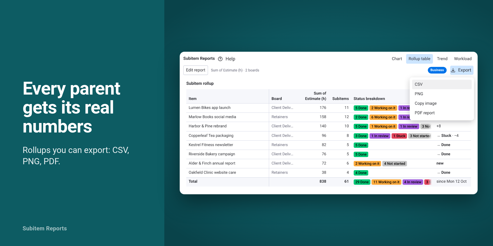

Subitem Reports guide
Last updated: 2026-10-16
What it does
Subitem Reports is a dashboard widget for monday.com. It charts, rolls up and exports the subitems (sub-items, subtasks) on your boards by status, owner, estimate or any other column, across one or many boards and every subitem level. It has four views: Chart, Rollup table, Trend and Workload. It reads your boards and never changes them.
Everything runs inside monday. Report settings and trend history are saved in your monday account's app storage. Nothing is e-mailed and nothing is stored outside monday.
Before you start
- Only an account admin can install apps. Other users see "Request to add" on the listing.
- To use the widget you need a member or guest role with access to the boards you report on. monday viewers cannot use the board API, so the widget shows "A member or guest role is required" instead of a report.
- Your subitems need the columns you want to measure: a Status column for status breakdowns and % done, a Numbers column (for example Estimate (h)) for sums and workload, and a People column plus a Date column for Workload.
- Every install starts a 14-day Business trial with everything unlocked. No card is needed. After the trial the account moves to Free and keeps every report.
Install and add to a dashboard
- Install Subitem Reports from its monday marketplace listing or from the install button on the Subitem Reports website.
- Open a dashboard, choose Add widget, then Apps, then Subitem Reports. The widget starts from the boards connected to the dashboard.
- The welcome screen, "See the work inside your subitems", shows a live
preview of your own subitems counted by status on the first connected
board that has subitems. Choose "Use this report" to keep it (while the
preview loads the button reads "Start with
"), or "Choose boards" to pick boards first. "Read the guide" opens this page. During the trial the welcome screen also says how long it has left, for example "Business trial: 14 days left, everything unlocked, no card".
If none of the connected boards has subitems yet, the preview shows items
instead and says "No subitems on

Your first report
The report is set up in the "Edit report" bar at the top of the widget. When the bar is collapsed it shows a one-line summary of the report, for example "Subitems · Count by Status · 2 boards". Open it to change the fields below. Each view shows only the fields it uses.
- Boards: a searchable picker ("Search boards…"). Free reports use one board; Team combines up to 5; Business has no limit. On Free, picking another board swaps it in.
- Rows (Chart, Trend, Workload): Items, Subitems or Items + Subitems. The Rollup table always rolls subitems up to their parent items.
- Levels (on boards whose subitems have subitems of their own): "All levels" or "Direct subitems only", read the same way by every view (see Multi-level subitems below).
- Group by (Chart): any column, including Status, People, Date, Numbers and Text columns. Date groups are ordered chronologically; blank cells form a "No value" group.
- Aggregation: Count, Sum, Average, Min, Max or % done. Sum, Average, Min and Max read a number column (the Value column field); % done reads a status column (the Status column field) and is the share of rows in a done label. Count needs nothing else.
- Done labels (with % done): which labels count as done. The default is "the board's own done labels", the labels your board marks as done in the column's settings. Tick other labels when a board uses one such as "Complete" that is not marked done; "Use the board's done labels" goes back to the default.
- At-risk labels (Rollup table): which labels count as stuck for the What changed column. The default is the labels named Stuck.
- Filter (every view): choose a status column and untick the labels you want to leave out, for example Done. The field is named after the column, for example "Filter Status".
- Chart type (Chart): Bar, Line, Pie or Donut.
- Goal (bar and line charts): a target drawn as a line, for example 40 for 40 hours. The Trend draws the same goal line.
The Workload view has its own fields above the grid (see Workload below). The PDF report's title, "Prepared for" line and logo are set when you create the PDF (see Exports).
Changes save by themselves while the dashboard is in edit mode; the widget confirms with "Saved for everyone on this dashboard". Outside edit mode it says "Changes are not saved outside the dashboard's edit mode." The report settings are shared by everyone who uses the dashboard; the view you last opened is remembered for you alone.
After your first report a one-time strip under the chart suggests the next steps: "Next: Rollup table · Export · Trend".
Columns with the same title and type are combined across boards, even when monday gives them different IDs. Give columns distinct titles when they mean different things or use different units. Subitems can use different columns from their parent items; the pickers show the columns of the rows you chose.
The views
Chart
A bar, line, pie or donut chart of the aggregation per group. Status groups use the board's own label colors and order. Charts draw up to 20 groups; the rest are combined into one "Other (N)" group, and the CSV keeps every group. Hover a bar or slice for the exact value. A % done chart is scaled 0-100 %.
Rollup table
One row per top-level parent item with its board, the measured value (titled after the real column, for example "Sum of Estimate (h)"), the subitem count (shown once when the measure is Count, since the value is that count) and a status breakdown in the board's colors, plus a totals row. For % done each value also tells how many subitems are done, for example "3 of 8 done". With Levels on "All levels" the table includes every subitem under the parent, at every level. On Business the table also has the "What changed" column (see below).

Trend
One value per day for the report's overall number (for example the count of open subitems or the sum of estimates), drawn as a line with the goal line. How the history is collected is explained below.
Workload
Hours per person per week. Choose the People column, the Date column and the Hours column (a Numbers column that holds hours), and the window in the Weeks field: "Next 4, 8 or 12 weeks" (from this week on, for estimates against due dates) or "Last 4, 8 or 12 weeks" (up to this week, for logged time). Until you choose, the widget takes the columns that hold the most values and looks ahead or back depending on where most of the dates fall. A row's hours are split evenly between its assignees and placed in the week of its date; rows without an assignee go to "Unassigned". Hover a cell for the person, the week and the hours.
Exports
The Export menu above the report offers "CSV", "PNG", "Copy image" and "PDF report":
- CSV exports the current view: the chart's groups and values, the full rollup table, the workload grid (people × weeks) or the trend (Day (UTC) · Value). Text that looks like a spreadsheet formula is escaped. If your spreadsheet opens the file in one column, import it with Data > From Text/CSV and choose the comma delimiter.
- PNG saves the current view as an image in the dashboard's colors. A very tall table is cut off; the widget says so, and the CSV has every row.
- Copy image puts the same image on your clipboard for Slack, e-mail or a deck. When the browser does not allow clipboard access inside monday, the widget downloads the PNG instead and says "Copying isn't allowed here, so the image was downloaded".
- PDF report (Business) opens a short form above the report: "Report title" (left empty, the PDF uses the report's headline, for example "Sum of Estimate (h) across subitems by Status"), "Prepared for (optional)", "Logo (optional)" with "Upload logo" (a PNG or JPEG from your computer, scaled down to 400 × 160 px) and "Include What changed". "Create PDF" builds the report in your browser and downloads it: a cover with the title, the boards, the date, the logo and the "Prepared for" line, then the chart, the rollup table (with the What changed column when it is included) and, when the Workload columns are set, the workload grid. Tables in the PDF stop at 200 rows with a note that the CSV export has the full table. In the dashboard's edit mode your title, line and logo are saved with the report settings for the next PDF; outside edit mode they last until you leave the page.
CSV, PNG and Copy image are available on Team and Business; the PDF report on Business. Entries your plan does not include stay clickable and carry a lock pill with the plan's name; choosing one opens the plan card, and the export you chose runs as soon as the account is upgraded. Exports are generated in your browser; nothing is uploaded anywhere.
Trend history and how it is recorded
The Trend records itself: whenever anyone opens the dashboard and the report renders, the widget writes today's value into your monday account's app storage, once per day (UTC). The last write of the day wins. There is no background job and no backfill: days on which nobody opened the dashboard stay empty and are drawn as gaps.
The status line under the chart says exactly that, for example "Recorded whenever someone opens this dashboard · Last recorded Mon 13 Oct · 3 days without a visit · Record now". "Record now" refreshes the report and records today's value. On the first day the Trend reads "Day 1 recorded — come back tomorrow."
History belongs to the account, not to the user who opened the dashboard: everyone who opens the dashboard sees the same series. It is recorded on every plan from day one. Free shows the last 30 days live and draws the older recorded days faded, with the link "Keep 13 months of history with Team"; Team and Business show 13 months (400 days), change badges such as "+12% vs 7 days ago" and "+30% vs 30 days ago", and the trend CSV.
A series is identified by the boards, Rows, Levels, Aggregation, value or status column, done labels and status filter. Changing any of these starts a different series; changing the chart type, the goal or Group by keeps the same series. Each series keeps its latest 400 recorded days.
To delete a series, open the dashboard in edit mode and choose "Delete this history" on the Trend; its What changed record goes with it. "Delete all Subitem Reports history" in the Help menu removes every trend series, every What changed record and the usage counters the app stored for your account, for everyone; it is available to account admins in the dashboard's edit mode. Neither touches the report settings.
What changed
On Business the Rollup table and the PDF report include the "What changed" column: for each parent, the change in the measured value since the last recorded day ("+3", "−1"; with % done the change is in percentage points, "+5 pts"), parents that moved to Done ("→ Done") or became stuck ("→ Stuck"), and parents that are "new" since that day. The footer names the comparison day ("since Mon 13 Oct"), and a line under the table counts the parents removed since then ("2 parents removed since Mon 13 Oct"). On your first visit the column reads "First visit — changes appear from your next visit", because the comparison point is written the first time the report renders.
"Stuck" means the labels named Stuck on your board; you can change that in the At-risk labels field. On Free and Team the column header reads "What changed · Business" with a lock pill.
Multi-level subitems
Boards whose subitems have subitems of their own are read at every level. The Rollup table rolls everything up to the top-level parent. The Levels field chooses between all levels and direct subitems only, and every view reads it the same way. With "Direct subitems only" each direct subitem counts once, as monday shows it, including a status or number monday calculates from the subitems under it.
Where monday calculates a parent's Numbers, Date or Status from its descendants, Items uses those calculated values, while Subitems and Items + Subitems use the underlying rows, so a parent's rollup is not counted again next to its descendants. Count counts actual rows, including intermediate levels. In the Rollup table's status breakdown, an intermediate subitem whose status monday calculates shows as "rolled up" (for example "2 rolled up"), so the breakdown adds up to the subitem count; grouped by Status, the Chart leaves those subitems out for the same reason.
Large boards are read page by page. A board with more than 5,000 rows is cut
there, and the widget says so ("Showing the first 5,000 rows of
Plans and trial
| Free | Team | Business | |
|---|---|---|---|
| Price per account | $0 | $29/month or $276/year | $79/month or $756/year |
| Boards per report | 1 | 5 | Unlimited (within monday's dashboard limits) |
| Views | Chart, Rollup table, Trend, Workload | All | All |
| Exports | None (lock pills) | CSV, PNG, Copy image | CSV, PNG, Copy image, PDF report |
| Trend | Last 30 days shown; history recorded from day one | 13 months, change badges, trend CSV | 13 months, change badges, trend CSV |
| What changed | — | — | In the table and the PDF |
| Support by e-mail | Reply within 2 business days | Reply within 2 business days | Reply within 1 business day |
One flat price per monday account: every user and every widget is included, and nothing is metered except boards per report. Yearly billing is $23/month for Team and $63/month for Business, billed once a year. Plans are bought and billed through monday.com; you can cancel at any time in monday's billing, and any charge can be fully refunded within 30 days through monday.
Every install starts a 14-day Business trial. The header chip "Business trial · 14 days left" counts down; its tooltip ticks off "Report saved", "First export" and the recorded days. With 4 days left, and again on the day before it ends, a one-line banner says what pauses when the trial ends. After day 14 the account moves to Free: reports, settings and recorded history stay. A report with more boards than Free allows shows its first board with the notice "Showing the first board of N — resume Team to include all"; exports keep their lock pills; the Trend keeps the last 30 days live; the "What changed" header shows its lock.
The plan badge in the Edit report bar ("Free plan · see plans", "Team", "Business" or "Business trial · N days") opens monday's plan picker. Only an account admin can change the plan; users who are not admins see "Only an account admin can change the plan." and "Copy a message for your admin", which copies a short request to the clipboard.
Describe a report (optional, uses your monday AI credits)
On the Chart, type what you want into "Describe a report…", for example "hours per person", "open subitems by owner" or "% done per parent" (the three example chips), and the widget sets up the report for you: it chooses Rows, Group by, the aggregation, the column, the chart type and the status filter from your board's real columns. Every number is still computed by the widget from your board data; the AI only picks settings. The result is announced as "Applied: Sum of Estimate (h) by Owner · Undo" and the summary line shows "Set up with AI" until you edit the report.
What is sent: your request, the board names, the column titles and types, and the item and subitem counts go to monday AI on your account's credits. No cell values, item names or people. The feature needs monday AI enabled for your account (the External AI gateway permission) and AI credits; it is included on every plan.
Privacy
Before the widget is used, each person sees a line linking to the Terms of Service and the Privacy Policy: on the welcome screen of a new widget, and once under the report for everyone else ("OK" accepts it).
The widget reads board data through the monday API in your browser with read-only access and does not change your boards. Report settings, including a PDF logo you upload, are saved in your monday account's app storage under the widget's own id, so everyone who uses that dashboard sees the same report. Trend history, What changed records and a few usage counters are saved there too, shared across the account. Plan purchases run through monday's own plan picker and billing. If you use "Describe a report", your request and the board names and column titles go to monday's AI gateway on your account's credits and are passed on by monday to its model providers under monday's AI terms. Nothing is e-mailed, nothing goes to any server run by the developer, and the only thing the developer receives is the e-mail you send to support. Removing the widget from a dashboard stops its settings from being read; uninstalling the app removes the widget. Neither deletes what is stored. Stored history is deleted with "Delete this history" or with "Delete all Subitem Reports history" in the Help menu. Everything the app stored, report settings included, is deleted by the developer when an admin of your account asks, with your monday account ID. The privacy policy on the Subitem Reports website has the details.
Troubleshooting
- % done shows 0 %: no row has a label that counts as done. Check that Rows is Subitems (statuses are usually on the subitems, not the parents), that the Status column is the right one, and tick the right Done labels when your board uses a label such as "Complete" that is not marked done in the column settings.
- "Column not found — choose again in Edit report": the column this report used was renamed or deleted, or a newly added board does not have it. The widget never swaps in another column by itself; choose the column again in Edit report.
- "Showing the first board of N — resume Team to include all": the report has more boards than the current plan allows, usually after the trial. Nothing is lost: upgrade to see every board again, or remove boards from the picker.
- "No subitems on
yet" : the board has no subitems, so a report on Subitems has nothing to count there. Add subitems, switch Rows to Items, or choose another board. - "1 board in this report is not shared with you": another user added a board you cannot open. The boards you can see still render; ask the board owner for access.
- "monday is rate-limiting requests — retrying in N s": monday asked the widget to slow down. It retries by itself; nothing to do.
- "monday AI is not enabled for this account (External AI gateway permission) — ask an admin", "Your account is out of monday AI credits" or "monday AI is busy — try again": "Describe a report" could not run. After a permission or credits error the input stays hidden until the dashboard is reopened. The chart is never affected.
- "Couldn't turn this view into an image in this browser" or "Couldn't copy this view as an image in this browser": the browser could not draw the view as an image. Export CSV instead, or try another browser. For Copy image, allow clipboard access for monday.com if your browser asks.
- "Couldn't read this report's saved settings" or "Something went wrong": choose Try again; if it repeats, "Reset report" deletes this widget's saved settings and starts over. Recorded history is not affected.
- The Trend is empty or has gaps: history is written only when someone opens the dashboard. Open it daily, or use "Record now" after a change.
- The widget is blank in monday's own dashboard PDF export: monday's dashboard export does not draw app widgets. Use the widget's Export menu instead: "PDF report" (Business) or "PNG" (Team).
- "Mixed statuses" or "rolled up" in a breakdown: on boards whose subitems have subitems of their own, monday calculates such a subitem's status from the subitems under it (see Multi-level subitems).
- Workload says "No tracked hours in the next 8 weeks" (or the last 8): the dates in the Date column lie outside that window. Choose the other direction or more weeks in the Weeks field, or check that the Date column is the one that holds the dates.
Need help?
E-mail contact@luizperren.dev with your monday account ID, the dashboard and view you used, what you expected and what happened. Do not send passwords or API tokens, and blur personal or confidential board content in screenshots. Replies come within 2 business days (1 business day on Business). The Help menu in the widget has "Setup guide" (this page), "Rate Subitem Reports" (monday's rating dialog), "Contact support" and "Request a feature" (both start an e-mail to support) and "Delete all Subitem Reports history".
Subitem Reports is developed and operated by Luiz Perren, an independent developer based in Switzerland. monday.com is a trademark of monday.com Ltd.